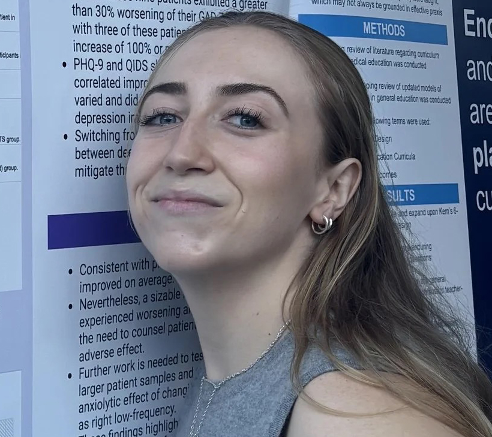

← Back to Program

Morgan Healey
Neurospirituality Lab, Center for Brain Circuit Therapeutics, Boston, MA, Russian Federation / Department of Neurology, Brigham and Women's Hospital, Boston, MA, USA
Concurrent
A network for self-transcendence derived from patients with brain lesions
Morgan Healey, Yaser Sanchez-Gama, Mengyuan Ding, James Tanner McMahon, Chase Bourbon, Rumaisa Jesani, Ginger Atwood, Brian Lord, Jay Sanguinetti, Judson Brewer, David Vago, Shan Siddiqi, Franco Fabbro, Cosimo Urgesi, Jared Nielsen, Michael Ferguson
Morgan Healey — Neurospirituality Lab, Center for Brain Circuit Therapeutics, Boston, MA, Russian Federation / Department of Neurology, Brigham and Women's Hospital, Boston, MA, USA
Yaser Sanchez-Gama — Neurospirituality Lab, Center for Brain Circuit Therapeutics, Boston, MA, USA / Department of Neurology, Brigham and Women's Hospital, Harvard Medical School, Boston, MA, USA
Mengyuan Ding — Neurospirituality Lab, Center for Brain Circuit Therapeutics, Boston, MA, USA / Khoury College of Computer Sciences, Northeastern University, Oakland, CA, USA
James Tanner McMahon — Department of Neurosurgery, Mass General Brigham, Harvard Medical School, Boston, MA, USA
Chase Bourbon — Neurospirituality Lab, Center for Brain Circuit Therapeutics, Boston, MA, USA
Rumaisa Jesani — Neurospirituality Lab, Center for Brain Circuit Therapeutics, Boston, MA, USA
Ginger Atwood — School of Medicine, University of California, San Francisco, CA, USA
Brian Lord — University of Arizona, Tucson, AZ, USA
Jay Sanguinetti — University of Arizona, Tucson, AZ, USA
Judson Brewer — School of Public Health, Brown University, Providence, RI, USA
David Vago — Department of Psychiatry, Brigham & Women's Hospital, Harvard Medical School, Boston, MA, USA
Shan Siddiqi — Department of Neurology, Brigham and Women's Hospital, Harvard Medical School, Boston, MA, USA
Franco Fabbro — Institute of Mechanical Intelligence, Sant'Anna School of Advanced Studies, Pisa, n/a, Italy
Cosimo Urgesi — Department of Human and Social Sciences, Universitas Mercatorum, Roma, n/a, Italy / Scientific Institute, IRCCS E. Medea, Pasian di Prato (UD), n/a, Italy
Jared Nielsen — Department of Psychology & Neuroscience Center, Brigham Young University, Provo, UT, USA
Michael Ferguson — Neurospirituality Lab, Center for Brain Circuit Therapeutics, Boston, MA, USA / Department of Neurology, Brigham and Women's Hospital, Harvard Medical School, Boston, MA, USA
Self-transcendence, the reorientation of experience away from the self toward others, nature, or broader meaning, is a fundamental dimension of human psychology, yet its causal neural architecture remains poorly understood. We applied lesion network mapping to 88 neurosurgical patients with pre- and post-operative assessments of trait self-transcendence to identify the distributed brain network whose disruption alters this capacity. The resulting network showed significant spatial correspondence with the default mode network and, at a finer parcellation level, with frontoparietal control subnetworks. Leave-one-out analyses identified posterior midline regions as the most stable correlates of increased self- transcendence following brain lesions. Independent validation against fMRI meta-analyses of self-referential processing, compassion, and ketamine administration, alongside a neuromodulation target previously shown to modulate the sense of self, converged on a consistent model. These findings provide causal evidence for a network architecture in which posterior midline hubs constrain, and brainstem and anterior midline regions facilitate, self-transcendent experience.